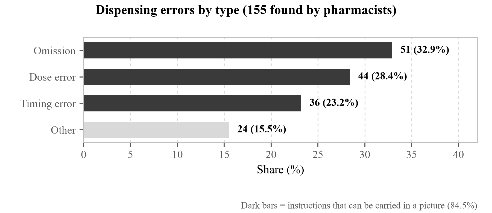
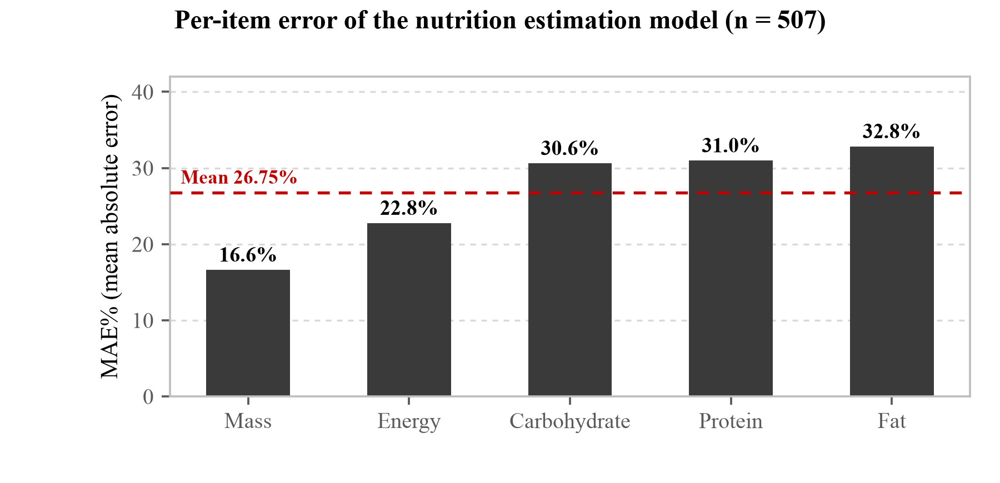
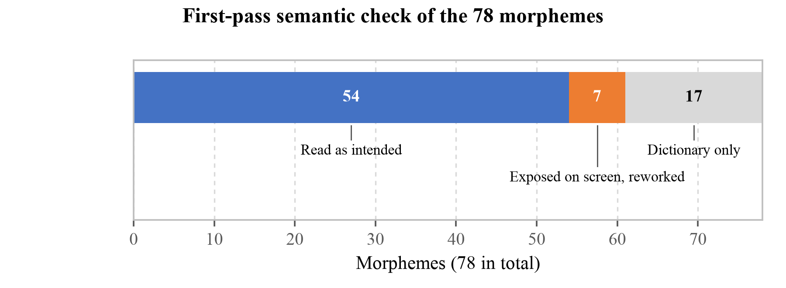

SnapCare : a prescription you never have to read
01Background
basic literacy skills
developed countries
sufficient health literacy
A prescription is written to be read. From the moment it is handed over everything depends on the patient's ability to read it, and for a large population that ability is absent or partial. Worldwide 739 million adults lack basic literacy skills, and even across 31 developed countries 18% of adults fall below the most elementary level.
The gap is wider within countries than between them. In Korea 39.6% of adults do not reach a sufficient level of health literacy; among those aged 65 and over it is 59.7%. Low health literacy is consistently associated with more hospitalisation and a reduced ability to take medicines correctly [2].

02Problem
Removing text is necessary but not sufficient. For someone who cannot read a prescription a text interface is no different from the paper one. Yet pictures can fail to be read as well: in the Philippines only 17 of 108 pictograms reached the ANSI Z535.3 threshold among 52 adults [1].
Existing pictogram sets are lists of pictures. A set of n drawings can say n things; an instruction not drawn in advance cannot be said at all. Their licences also state that pictograms must not be the sole means of conveying information, which is exactly this case.


03Objective
At no point on the path to a judgement is the user required to read or type.
Two channels are laid so that neither leans on the other. The pictures alone, or the speech alone, must reach the same instruction. Text stays on screen for those who can use it, but the instruction has to survive without it.
- Compose pictograms from a grammar rather than select them from a list
- Rewrite the spoken sentence rather than read the extracted string aloud
- Compute the verdict on the device, with no account and no network
04How it works
- Photograph. The user points the camera at a prescription. Nothing is typed and no object has to be chosen first.
- Read on the device. Text recognition and form parsing run in the browser. Drug, dose, frequency, timing, duration, storage and contraindications are extracted; the photograph never leaves the device.
- Compose the pictures. SIGIL builds each frame on the spot from morphemes.
- Rebuild the sentence. VOCA keeps only what the patient needs; the verb and the body site follow from the dosage form.

Nothing on this path needs a server. Recognition, composition and the verdict run in the page, so the photograph never leaves the device.
05SIGIL — pictogram engine
SIGIL is built from morphemes and a grammar, not from a list of drawings. A head stands on its own; a modifier cannot and goes into a slot inside a head. Five operators apply on top.
| Element | n | Examples |
|---|---|---|
| Head | 57 | pill_bottle, dropper_bottle, allergen_peanut |
| Modifier | 21 | time_morning, qty_two, storage_fridge, body_eye |
| Operator | 5 | no{}, half{}, twice_daily{} and two more |
| Morphemes | 78 | composed, not selected |
The 78 were derived backwards from the distribution of medication error: dosage form and device 26, food 10, allergen 9, symptom 8, state 7, body site 6.


Figure 4. Every morpheme the engine holds. A frame is one head with modifiers slotted into it; nothing here was drawn for a particular prescription.

06One prescription, composed
The output below is not written by hand. The prescription text is passed through the same path the camera uses and the resulting DSL is reproduced verbatim.
Amoxicillin capsules 250 mg — three times a day, 30 min after meals, 1 capsule, 7 days, refrigerate, not in pregnancy, no alcohol \three_times_daily{\capsule_strip{\food_bowl}} \capsule_strip{\time_morning} \capsule_strip{\time_noon} \capsule_strip{\time_evening} \capsule_strip{\qty_one} \capsule_strip{\storage_fridge} \finish_course \no_alcohol \state_pregnant \state_breastfeedingTen frames from one prescription. Four carry what was buried in the warning box in small print: finish the course, no alcohol, not in pregnancy, caution while breastfeeding.


07VOCA — spoken instruction
VOCA does not read the extracted string aloud. A prescription holds a great deal the patient does not need and what they do need is scattered. Research on interactive voice response shows older users complete fewer tasks, the difficulty coming from ambiguous options, speech rate and option length [4]. The lesson taken was not "offer fewer options" but "remove steps"; the path to a verdict has none.
The verb follows the dosage form. A tablet is take, eye drops are put in, an ointment is apply. Once the form is known so is the body site, so the eye is composed together with the drops instead of being left out of the picture.
08Evaluation
| What was measured | Result |
|---|---|
| Formative runs4 prescriptions × 7 conditions, 6 items each | 27 / 28 passed all six0 / 28 before the fix |
| Semantic check of all 78 morphemes | 54 read as intended24 differently; the 7 exposed on screen were reworked |
| Nutrition model, Nutrition5k RGB split | 26.75% mean MAEn = 507, the deployed web.onnx |
| Offline with the server shut down | Normala missing service-worker cache entry was found and fixed |
The formative score is kept per item, not reduced to one number: "27/28" alone leaves no way of knowing what failed. The single failure was item D5 under one condition, left uncorrected.



09SDG 3 · what we do not claim
| Target | Contribution |
|---|---|
| 3.4 | Thresholds derived from the individual's energy requirement; diabetes and hypertension narrow them |
| 3.8 | Reduces the literacy-driven gap at the self-management stage, after care ends |
| 3.d | Carries course completion as a picture, addressing the human route to antimicrobial resistance |
- No comprehension test with people has been run. ISO 9186-1 (67%) and ANSI Z535.3 (85%, critical confusions ≤ 5%) must still be confirmed with low-literacy adults.
- Cultural adaptation is unverified. Locally produced pictograms passed for 20 of 23 symbols where USP-DI passed for 11 among the same 46 people [3].
- Experts are not patients. An expert answering that a patient could probably manage is not evidence that a patient did.
10Expert opinion survey
one letter each
(3.5%)
five continents
The list was built by surveying eight domains in parallel, recording a source URL for every entry and never inventing an address. Each person received a separate letter carrying an opaque token, so the server stores the token and only our own spreadsheet can say who answered.
recorded
sources
hosts
send them all
by a server
11What they told us
A prohibition is not read as a prohibition
Three respondents on three continents independently reported the same defect in the live demonstration.
The prescription read not to use the eyedrops in pregnancy while the pictogram showed a pregnant woman, making the patient assume it is safe to use in pregnancy. Prof. Atif Usman, The Islamia University of Bahawalpur, Pakistan
The engine already had a no{} operator that draws a prohibition ring and was
not applying it. Fixing it uncovered the same accident running the other way: an avoid verdict
was wrapping every flag, so no_alcohol became \no{\no_alcohol} —
a slash through "do not drink" says that drinking is fine.
The premise itself was questioned
To a non-literate person pictograms too can feel like letters. As the saying goes, "the black is the writing and the white is the paper." Prof. Heejung Seo, Dong-eui University, Korea
The comprehension studies we cite measured understanding after a picture was recognised as a picture. Whether it is recognised as a picture at all was never measured.
Our design could create a new risk
Even a medicine that carries risk for pregnant women is sometimes prescribed after considering the patient's overall condition, and where the patient checks alone they may end up not receiving the drug therapy. Prof. So-Young Lee, pharmacist, Chungnam National University, Korea
A personalised verdict cannot beat a personalised prescription. This runs directly into the differentiator we had put forward.
pharmacy, n = 13
nursing, n = 9
nursing, n = 9
nursing, n = 9
The population was defined too loosely. Five respondents noted that the people they meet are more often visually impaired than non-literate, and one separated what we had been blurring: total blindness, low vision and low literacy are three groups, and pictograms address only the third.
One respondent argued the product may not be needed. An industry team leader wrote that Korean prescriptions already carry a barcode and that electronic prescriptions will make this redundant. Three of the five points do not hold outside Korea. Two we cannot answer, and they are recorded unanswered rather than argued away.
12What the survey changed
- Contraindication marking was split three ways. Flags that say what is contained gain and lose the slash with the verdict; flags that say what not to do are always drawn as prohibited.
- finish_course was redrawn. Filling three of five cells drew a state in progress, which says "not finished yet" rather than "finish it". A directional arrow proposed by a respondent replaced it.
- The demonstration prescription was clinically wrong. Amoxicillin capsules are kept at room temperature, not refrigerated.
- The survey's own defects were reported by respondents and fixed mid-run: a branch that showed no questions at all, a contact address promised but never printed, and 78 morphemes listed without their names.
13References
[1] Gutierrez, M. M., Patikorn, C. & Anantachoti, P. Evaluation of pharmaceutical pictogram comprehension among adults in the Philippines. J. Pharm. Policy Pract. 15:30 (2022).
[2] Berkman, N. D. et al. Low health literacy and health outcomes: an updated systematic review. Ann. Intern. Med. 155(2):97–107 (2011).
[3] Dowse, R. & Ehlers, M. S. The evaluation of pharmaceutical pictograms in a low-literate South African population. Patient Educ. Couns. 45:87–99 (2001).
[4] Miller, D. I. et al. Improving older adults' experience with interactive voice response systems. Telemed. e-Health 17(6):452–455 (2011).
[5] Korea Disease Control and Prevention Agency. KNHANES, 9th cycle year 2 (2023). [6] ISO 9186-1:2014; ANSI Z535.3.
Reproduction. Every figure on this poster is produced from the repository by one script; the roster, the letter, the item definitions and the response export are held with it, so a reader can rebuild the numbers rather than take them.
Acknowledgement. Thirty-nine experts in twenty-two countries answered without compensation, and several of them reported a defect in the survey itself. Their answers are recorded as given, including the two points we cannot answer.